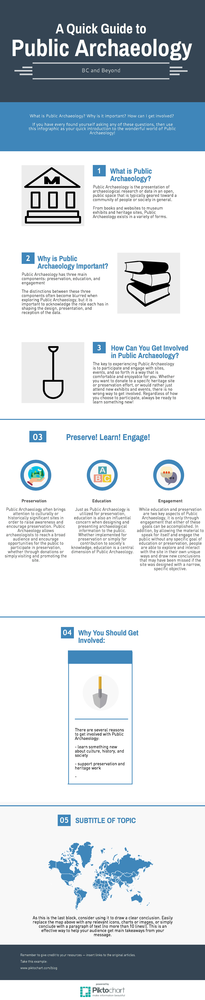

Visualisation
When considering Public Archaeology, and how increasingly digital it is becoming, visualisation is starting to play a key role in how research and data are understood and presented. Just as Public Archaeology takes a variety of forms for various purposes, there are also many ways in which visualisation can be implemented and incorporated into a new or existing project.
As an example of how visualisation can be applied to an existing project, the infographic below takes the information from the main page of "Public Archaeology" and presents it in a new way that incorporates more images, icons, and designs that may present the information in a more appealing, eye-catching, and streamlined way. 
What's the point?
Public Archaeology has three main components:
Public Archaeology often brings attention to culturally or historically significant sites in order to raise awareness and encourage preservation. Public Archaeology allows archaeologists to reach a broad audience and encourage opportunities for the public to participate in preservation, whether through donations or simply visiting and promoting the site.
Just as Public Archaeology is utilized for preservation, education is also an influential concern when designing and presenting archaeological information to the public. Whether implemented for preservation or simply for contribution to society’s knowledge, education is a central dimension of Public Archaeology.
While education and preservation are two key aspects of Public Archaeology, it is only through engagement that either of these goals can be accomplished. In addition, by allowing the material to speak for itself and engage the public without any specific goal of education or preservation, people are able to explore and interact with the site in their own unique ways and draw new conclusions that may have been missed if the site was designed with a narrow, specific objective.
Overall, the distinctions between these three components often become blurred when exploring Public Archaeology, but it is important to acknowledge the role each has in shaping the design, presentation, and reception of the data.
Public Archaeology in Victoria, BC: The Blog
To learn more about Public Archaeology, check out Public Archaeology in Victoria, BC. Designed as a counterpart to this webpage, the blog discusses issues and themes of Public Archaeology. In addition, the blog will explore specific sites, events, and topics of Public Archaeology that are relevant to the city of Victoria in British Columbia, Canada.
Some of the Public Archaeology that will be explored in Victoria, BC, includes:
- The Royal BC Museum
- The Maritime Museum of British Columbia
- Signs of Lekwungen
- Craigdarroch Castle
Even if you are not familiar with these sites or any other Public Archaeology in Victoria, the blog will nonetheless serve as a useful resource for anyone looking to explore broader discussions of Public Archaeology as well as some of the specific examples it takes today.
Getting Involved
So how can you get involved in Public Archaeology? The key to experiencing Public Archaeology is to participate and engage with sites, events, and so forth in a way that is comfortable and enjoyable for you. Whether you want to donate to a specifc heritage site or preservation effort, or would rather just attend new exhibits and events, there is no wrong way to get involved. Regardless of how you choose to participate, always be ready to learn something new, since Public Archaeology is designed for you to gain new insights and experiences about history, culture, and our world!
For more information...
For additional updates on Public Archaeology in Victoria, BC, follow @DaltonPagani.